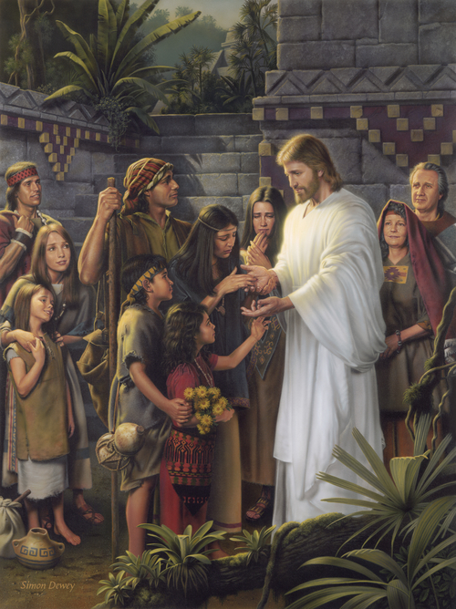

November 27, 2022

- Presiding: Bishop Saez
- Conducting: Bishop Saez
- Opening Hymn: #96 Dearest Children, God is Near You
- Opening Prayer: By Invitation
- Ward Business
- Sacrament Hymn: #194 There is a Green Hill Far Away
- Administration of the Sacrament
- Speaker: Brother Zack Saez
- Speaker: Brother Dylan Callaway
- Special Musical Number
- Speaker: Brother Karter Peters
- Speaker: Brother Ryan Hansen, of the Stake High Council
- Closing Hymn: #304 Teach Me to Walk in the Light
- Closing Prayer: By Invitation